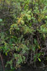
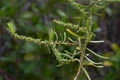
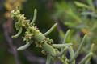
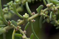
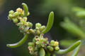
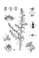

Common name in Tamil : Umarinandi, karuvumari
Common name in Telugu : Oligura dublu






Diagnostic characters
Botany & morphology
Ecology
Distribution
Perennial, erect or decumbent herb, to 50 cm tall. Leaves linear. Flowers small.
Leaves simple, alternate, petiole 1 mm long, exstipulate, linear - oblong, fleshy, terete, rarely flattish, base truncate, 1 - 2 x 0.2 - 0.4 mm.
Inflorescence axillary clusters.
Flowers minute, polygamous, unisexual, bracteate; perianth short, calycine, 5-lobed; stamens 5, filaments short, anthers rather large; ovary sessile, adnate to perianth, stigmas 2-5 and papillose.
Fruits spongy utricle included in perianth; seed orbicular.
Stem much branched, woody at the base, rooting at node.
Common on tidal mud-flats and salt marshes.
Indian coast, west Asia to Africa.
Top of the page